learn Git with us
What is Git?
Git is a DevOps tool used for source code management. It is a free and open-source version control system used to handle small to very large projects efficiently. Git is used to tracking changes in the source code, enabling multiple developers to work together on non-linear development. Linus Torvalds created Git in 2005 for the development of the Linux kernel.
Version Control Systems
Before we delve deeper into Git, let's understand what a version control system (VCS) is and why it's important.
A version control system is a software tool that helps developers manage changes to source code over time. It allows developers to:
- Track changes: VCS records every change made to the codebase, making it possible to revert to previous versions if needed.
- Coordinate work: VCS enables multiple developers to work on the same codebase simultaneously without interfering with each other's work.
- Collaborate effectively: VCS facilitates collaboration by providing tools for code review, commenting, and merging changes.
Other Version Control Systems
Git is the most popular version control system, there are other alternatives available:
- Subversion (SVN): A centralized version control system that tracks changes to files and directories over time.
- Mercurial (Hg): Another distributed version control system similar to Git, but with a simpler design and user interface.
- Perforce (Helix Core): Often used for large-scale development projects, Perforce is a centralized version control system known for its speed and scalability.
Why Git?
In this blog, we'll be focusing on Git and its integration with GitHub, one of the largest online platforms for hosting Git repositories. GitHub provides a range of collaborative features that make it an indispensable tool for developers, including:
- Code hosting: Host your Git repositories online and access them from anywhere.
- Collaboration: Easily collaborate with other developers using features like pull requests, code reviews, and issue tracking.
- Community: Join a community of millions of developers from around the world and contribute to open-source projects.
Installing GIt
Before we can start using Git, we need to make sure it's installed on your machine.
Checking if Git is Installed
open your command prompt and type git --version, as show below.
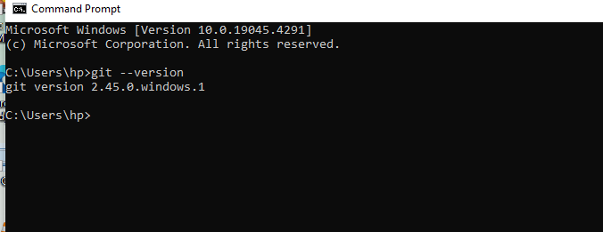
If Git is installed, you will see output similar to this image above.
if git is not install in your machine
If Git is not installed, you will see an error message indicating that the command is not recognized. In that case, you'll need to install Git.
installing Git
windows
It follow three steps:
- Download Git for Windows:
- Go to the official Git website.
- Click on the "Download" button to download the latest version of Git for Windows.
- Run the Installer:
- Once the download is complete, run the installer.
- Follow the installation steps, leaving the options at their default settings unless you have a specific reason to change them.
- Verify Installation:
- After installation, open a new command prompt window and run the following command to verify that Git was installed successfully: git--version or git -v
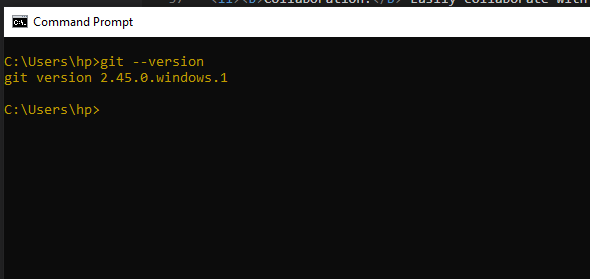
Configuring Git
Before you start using Git, you need to configure your username and email address. This information will be included with your commits to identify you as the author.
Username and Email Address
Open a terminal window and use the following commands to configure your username and email address:
git config --global user.name "your name"
git config --global user.email "your email e.g example@gmail.com"
Set Your Name
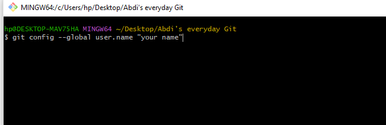
Set Your Email address
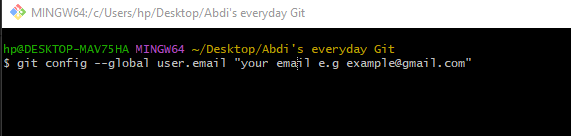
Verifying Configuration
To verify that your username and email address have been configured correctly, you can use the following command:
- git config --global user.name
- git config --global user.email
Initializing a Git Repository
Before we start tracking changes to our project, we need to initialize a Git repository. But first, let's understand what a Git repository is.
What is a Git Repository?
A Git repository, or repo, is a folder that contains all the files and folders of your project, along with metadata about the project's history. This metadata includes information about each change made to the files, who made the change, and when the change was made.
Open a terminal window and navigate to the directory where your project is located and run the following command as show below

new file will be created and it is .git folder that contains git's files
Adding Files to the Staging Area
Understanding the Staging Area
The staging area, or index, is where you prepare changes before committing them to the Git repository.
Tracked vs. Untracked Files
- Tracked Files: Files that Git is already aware of and tracks changes to.
- Untracked Files: Files that Git is not currently tracking.
Adding Files to the Staging Area
- Check File Status:
Use 'git status' to see which files have been modified:
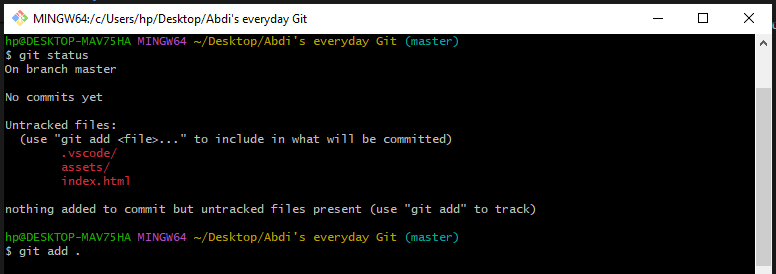
- Add Files:
Use git add to add files to the staging area:
using this command to add file one after another e.g git add file1 file2 file3 .....
or add all modified files at once:
use this command to add all files at once e.g git add .
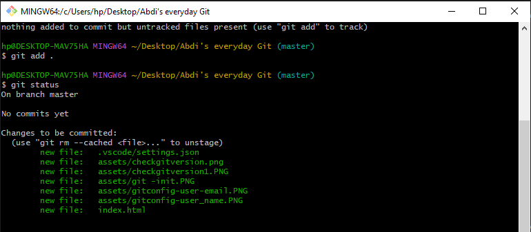
Committing Changes
Committing Changes to a Git Repository
After staging your changes, you can commit them to the Git repository.
- Committing Changes:
Use the following command to commit your staged changes: use git commit -m "your message goes here
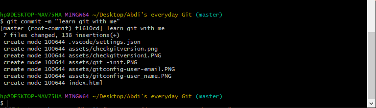
- Viewing Past Commits
To view a list of past commits, you can use the following command: use git log
- Going Back to a Particular Commit
If you want to revert your project to a previous commit, you can use the following command:
first use git log --online, then copy past commit-hash,
then use git checkout
Replace , with the hash of the commit you want to revert to. You can find the commit hash in the output of git log --online.
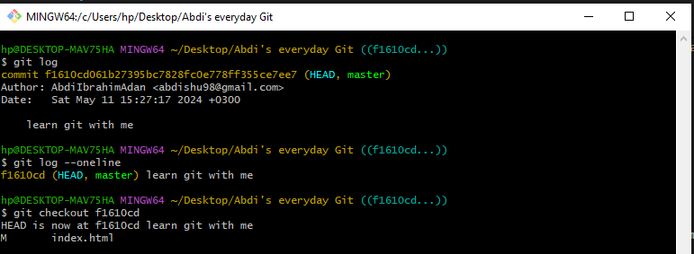
Branches in Git
What are Branches?
In Git, a branch is a movable pointer to a commit. When you create a new branch, you're essentially creating a new line of development that diverges from the main line of development. This allows you to work on new features, bug fixes, or experiments without affecting the main codebase.
Why are Branches Important?
Branches are important for several reasons:
- Isolation of Work: Branches allow you to work on new features or bug fixes in isolation without affecting the main codebase. This makes it easier to manage and review changes.
- Parallel Development: With branches, multiple developers can work on different features simultaneously without interfering with each other's work.
- Experimentation: Branches enable you to experiment with new ideas or changes without impacting the stability of the main codebase.
- Risk Reduction: By working on a separate branch, you can experiment with changes and revert them if they don't work out, without affecting the main codebase.
Creating a Branch
How to Create a Branch
To create a new branch in Git, you can use the following command: git branch branch-name
use this command:The git checkout -b branch-name command is used to create a new branch and switch to it in one step.
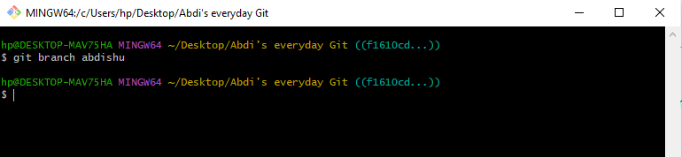
Viewing All Branches
Viewing All Branches
To view all branches present in a Git repository, you can use the following command: git branch
this command lists all the branches in the repository, and the active branch is indicated with an asterisk (*).
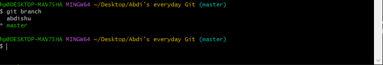
Switching active branches
To switch to other we use the following command: git switch branch-name or git checkout branch-name
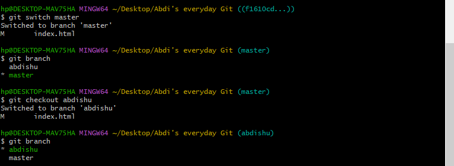
Merging a Branch
How to Merge Branches
To merge a branch into another branch (usually the main branch, such as master), you can use the following command: git merge branch-name , branch you have created is the one we merge to master branch
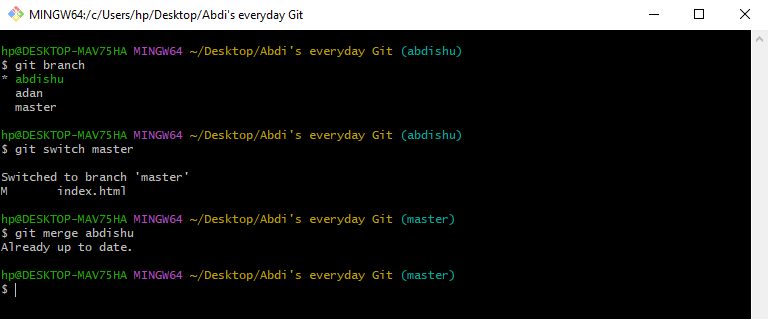
After merging the branch, Git will automatically incorporate the changes from the specified branch into the current branch.
Deleting a Branch
How to Delete a Branch
To delete a branch in Git, you can use the following command: git branch -d branch-name
Replace 'branch-name' with the name of the branch you want to delete.
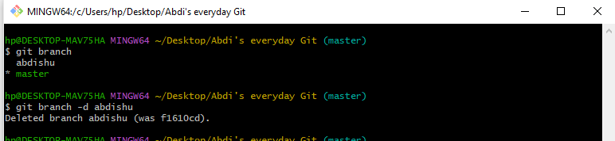
Next steps
Now that you've mastered the basics of Git, the next steps include exploring GitHub for collaboration, understanding branching strategies like Git flow, learning about Git rebase for a cleaner commit history, and exploring advanced Git commands such as git cherry-pick and git stash. Additionally, familiarize yourself with Git hooks for automation and integration with CI/CD tools like Jenkins and Travis CI. Keep practicing and exploring these concepts to become more proficient with Git and version control.
Congratulations! You have learnt Git